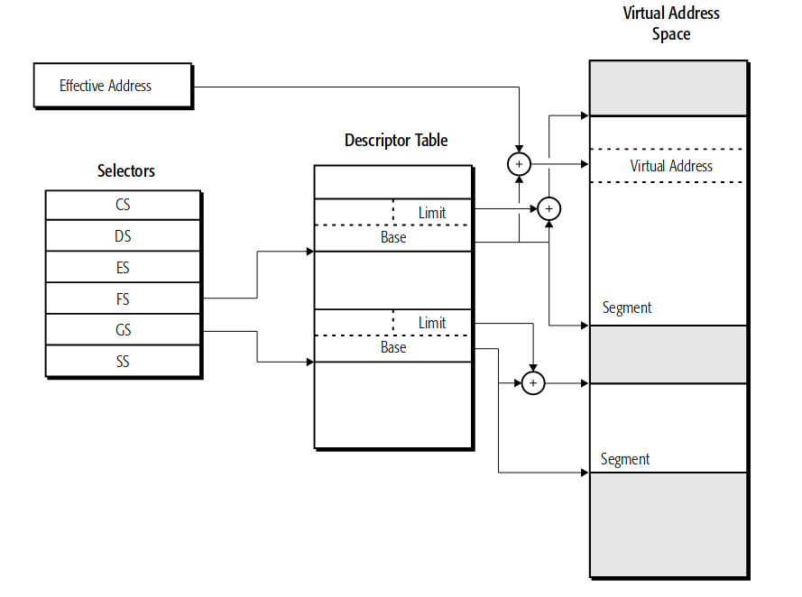
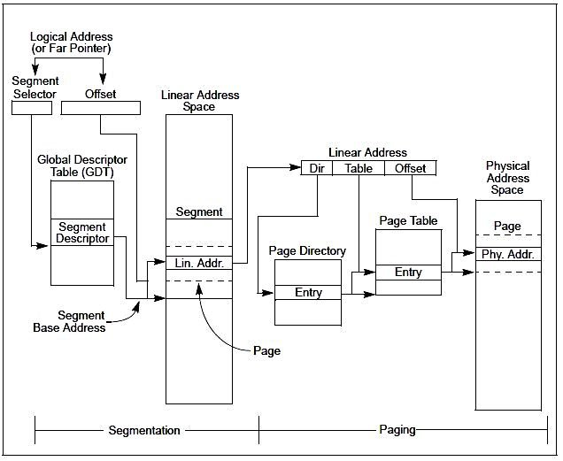
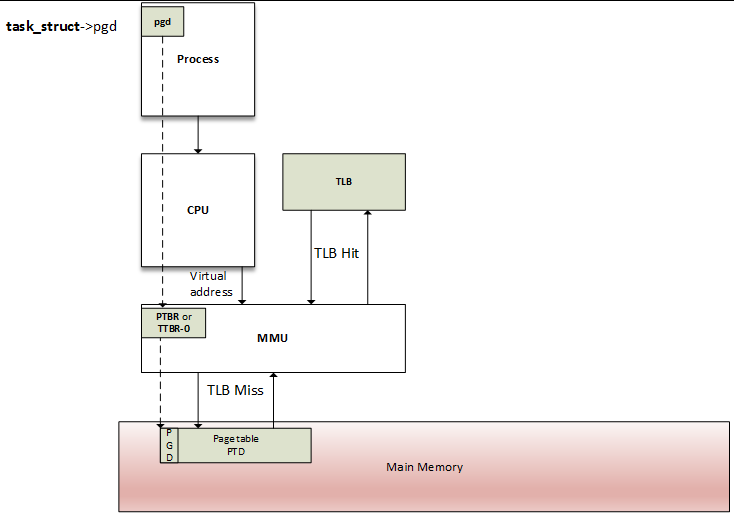
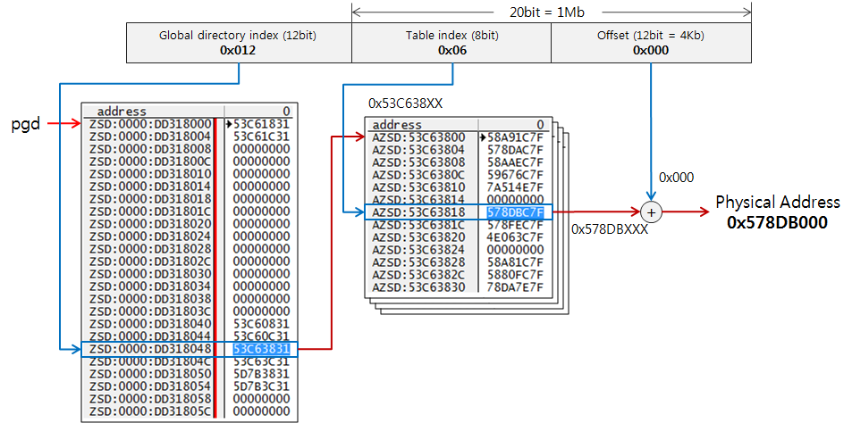

实际上Page Fault并不是如其名的一个“错误”，而只是访问内存分页的一种事件方式。
缺页中断（英语：Page Fault）又名页缺失、页故障等，是当进程试图访问内存数据、但该内存地址对应的物理内存尚未加载时，由CPU的内存管理单元MMU所发出的中断。缺页中断发生后，会发生外部存储的IO操作——这相对CPU及内存的访问是慢了几个数量级的。频繁的缺页中断，可能会造成性能问题，了解PageFault可以帮助我们理解以及进行IO相关的性能优化。
作为虚拟内存访问的一种事件机制，PageFault其实是内存分页以及CPU寻址方式的发展的结果。
内存分页
计算机存储是多层次体系结构的，这也是时间与空间的平衡。计算机的存储包括CPU的寄存器、片上缓存、内存以及外存（闪存或硬盘存储）等。
程序或可执行文件，在加载执行前都只是存放在外部存储中的文件。程序加载后，系统为进程分配内存，每个进程都会有自己独立的地址空间，也就是虚拟地址空间。虚拟地址空间的大小是由数据总线宽度决定的，一般也就是CPU的位数，在32位系统中虚拟地址空间就是4GB。操作系统内核常驻于内存中，所以一般（用户进程的）虚拟地址空间中还会统一预留出内核的地址空间。
内存的分配是通过将物理内存划分为页面，然后将这些页面映射到虚拟地址空间中来实现的。这是操作系统与CPU中的MMU内存管理单元协同处理的。通过引入虚拟地址空间，操作系统可以提高内存的使用效率，也可以避免进程间内存不隔离引发的问题。

在访问某个内存地址时，CPU会将虚拟内存地址交由MMU去访问内存数据。Page Table可以理解为MMU使用的映射表，当虚拟地址与RAM的物理地址建立映射关系时，访问虚拟地址时MMU可以转换为RAM的实际地址并访问物理内存。当某个虚拟地址在Page Table还没建立与物理内存地址的映射时，MMU转译地址失败，便会触发Page Fault，Page Fault之后会加载相关的物理内存分页，并在Page Table建立虚拟内存地址与物理内存地址的映射关系。
CPU寻址方式
为什么内存分页是计算机结构发展的需要？要理解内存分页，还需要了解CPU寻址机制的发展。
CPU中央处理器是一个超规模的集成电路，主要功能就是解析指令以及处理数据。从功能上CPU中主要分为三大部分，控制单元、运算单元以及存储单元，这三部分通过内部总线连接。控制单元包括指令寄存器、指令译码器及操作控制器等，主要是整个处理过程的调度；运算单元则主要是完成算术及逻辑运算，由控制单元信号控制；存储单元则负责存储数据及运算结果，包括片上缓存及寄存器组。总的来说，CPU会读取指令并译码，执行指令，得到运算结果写回，然后修改指令计数器继续下一条指令。
一条指令由操作码（opcode）和操作数（operand）构成，指令执行包括”取操作数“及”运算“两步。操作码表示指令的动作，例如算术运算、跳转等，操作数则表示指令操作对象。操作数是一个数字，它可以有多种来源，例如寄存器，存储器或者立即数。CPU的寻址方式在指令编码中是指操作数来源或者地址构成方法，根据操作数是否来源于存储器有分为存储器式寻址与非存储器式寻址。
非存储器式寻址一般包括立即数寻址、寄存器寻址，存储器式寻址则包括直接寻址、间接寻址、基址变址寻址等。比如ARM中的load、store指令就是典型的存储器式寻址的指令。
早期计算机或者现在的一些嵌入式设备，程序是直接加载运行在物理内存上的。比如一些MCU芯片，程序经过编译后，每条代码指令和数据都分配了地址，这也是程序运行时可以直接访问的物理内存地址。编译好的二进制一般会烧到ROM中，运行时是直接拷贝到在物理内存中并开始运行的。
0x10000000 100
0x10000004 200
0x10000008 MOV AX [0x10000000]
0x10000012 MOV BX [0x10000004]
0x10000004 ADD AX,BX
上述汇编代码示例中，汇编代码中硬编码的地址0x10000000就是运行期在物理内存中的地址，这就是直接地址寻址的方式。
上世纪BJT与FET晶体管的发明应用，使计算设备得到快速发展。1978年Intel发布了8086微处理器，这也是众所周知的x86架构的起源。8086芯片开始支持16位的字长（寄存器、数据总线等），但地址总线宽度支持到了20位。为了使CPU能访问整个地址空间，8086采用了新的的寻址方式——分段寻址。分段寻址，是指一个地址由段地址与偏移量两部分组成，这样的地址被标记为[segment: offset]，在当时段地址左移4位再与偏移量相加即为物理地址，以达到地址空间的扩充。分段寻址使得程序有了可以独立于物理地址的逻辑地址。

此时程序编译可执行文件会划分为代码段、数据段等，编译器会将地址修正为相对于所属段的偏移地址。程序加载到内存后，会根据需要分配代码段、数据段以及BSS和堆栈段的内存空间。Intel通过新增4个段寄存器（代码段CS、数据段DS、堆栈段SS、其他ES），来存放各个段的段地址。偏移地址编译后是固定的，段基址在不同的运行期是可能改变的。
0x10000000 100
0x10000004 200
// …
0x20000008 MOV AX [BP+0]
0x20000012 MOV BX [BP+4]
0x20000004 ADD AX,BX
在这个汇编代码实例中，[0]中的0就是相对数据段的偏移位置，BP就是基指针（寄存器）。在运行时，CPU寻址时会按数据段基址（比如0x10000000）+偏移位置0计算得到实际的物理地址进行寻址。
运行时对分段寻址的支持，需要一个段描述表，GDT全局段描述符表。GDT可以存放在任何内存位置，GDT的地址通过一个GDTR的寄存器来存放。因为GDT是全局可见的，用户程序可以随意修改段基址寄存器来访问任何内存。因此后来1982年推出80826时改成了段选择子+偏移地址寻址，段寄存器改成了存放选择子（约等于段描述符索引），并添加了权限控制，也就是保护模式。原理是相似的，都是借助寄存器增加了地址转译的中间层。

1985年Intel发布了80386，开始支持32位。操作系统从最初的单任务系统变为多任务并行处理。分段寻址实现了寻址空间的提升，但还有些问题。首先内存分段的地址空间都是连续的，在多任务的情况下很容易产生内存碎片（某些空闲的内存地址段不足以分配内存）；另一方面即使可以仔细地将不同的程序代码/数据放到不同的内存区域，但调度起来非常麻烦。为了便于内存管理与减少碎片，MMU出现并带来了虚拟内存地址。
MMU（Memory Management Unit）是CPU的内存管理单元, 也称作分页内存管理单元（Paged Memory Management Unit），这是一种基于内存分页的、负责处理CPU的内存访问请求的计算机硬件。MMU的功能包括虚拟内存管理、高速缓存控制、内存保护等。MMU在CPU指令单元与地址总线之间增加了一层。虚拟地址也称为线性地址，其实就是计算得到的逻辑地址，对于程序而言只知道虚拟内存地址，而不再需要关心物理内存地址。

Page Fault
回过头来，想象一下程序的运行场景。
一个可能有几十MB大小的可执行程序，它在运行的某个时刻是不会在跑所有的逻辑/代码的。有些是初始化时运行的，而有些会在很多条件分支满足后才执行。实际上操作系统确实不会一次性加载所有的代码的，因为内存分页的支持，只会在需要时才加载即可。
当CPU希望访问某个内存地址处的指令代码（或数据），若此时该内存地址（虚拟地址/线性地址）的数据尚未载入RAM时，Page Fault便发生了。内存访问大概的过程是这样的：
1、查找页表位置
2、如果Page Fault发生了，通知操作系统来处理，也就是PageFaultHandler
3、查找空闲页（帧）
4、从磁盘读入数据到RAM
5、更新进程的Page Table
6、之前触发Page Fault的指令恢复执行
缺页中断交给PageFaultHandler处理时，其根据缺页中断的不同类型会进行不同的处理：
Major Page Fault，硬缺页错误Minor Page Fault，软缺页错误Invalid Page Fault，无效缺页错误
硬性页缺失是指相关的页在页缺失发生时未被加载进内存的情况。这时操作系统需要：
1、寻找到一个空闲的页。或者把另外一个使用中的页写到磁盘上（若有需要），并注销在MMU内的记录
2、将数据读入被选定的页
3、向MMU注册该页
软性页缺失，物理内存中是存在对应页帧的，但发出访问的进程并未建立映射（可能是其他进程调入的），此时无需从磁盘读取写入内存。一般出现在多进程共享内存区域，比如共享代码库。
无效缺页错误，就真的是错误了，比如地址非法可能会Segmentation Fault异常并向进程发送SIGSEGV的信号，kill掉该进程。
可以参考“Linux下Page Fault的处理”的代码分析。
MMU与Page Table
每个进程都有独立的虚拟内存地址空间，都认为自己拥有全部的地址空间（尽管并非如此）。MMU作为一个内存管理单元，是如何进行虚拟内存地址转换的呢？
事实上每个进程都在内存中保存自己的VA（Virtual Address）转PA（Physical Address）的表，也就是Page Table。因为不同进程地址空间的重叠，这就要求映射表是区分进程的。MMU可以被配置指向该表的起始地址（PTBR页表基址寄存器，在ARM中为TTBR）。如前面所述，对于一个Major Page Fault，分页的物理内存读入后会向MMU注册该表，此后MMU通过查表就可以转译VA对应的PA了。结构如下图示：

虚拟内存的分页一般与物理内存分页保持一致的大小，对于一个分页，前者称之为page，后者称之为frame。一般而言，内存分页的大小是默认4Kb的（在ARM64上iOS为16Kb），我们以32位的内存地址空间为例，4GB的地址空间需要划分为2^20个page，这意味着Page Table会有2^20个条目（Page Table Entry，也简称PTE）。然后计算一下Page Table每个条目的内存大小。
每个条目（PTE）需要包含一个映射的frame的编号，因为2^32的物理内存空间同样按2^12的分页大小进行划分，也就是frame的编号是需要20bit来记录的；另外每个条目还需要记录额外的信息，至少1bit来记录分页是否有效（Present），至少1bit来记录分页是否dirty（涉及到Copy On Write），以及权限位。这一共需要用到4个Byte。于是对于每个进程而言，Page Table需要 2^20 * 4 = 4MB的内存。4MB不算大，但对于多进程的操作系统而言，这对内存消耗是很大的，并且Page Table虽然是进程分离，但是PTE是属于内核资源的。
PTE的保护与状态位 |
功能 |
|---|---|
_PAGE_PRESENT |
Page is resident in memory and not swapped out |
_PAGE_PROTNONE |
Page is resident but not accessable |
_PAGE_RW |
Set if the page may be written to |
_PAGE_USER |
Set if the page is accessible from user space |
_PAGE_DIRTY |
Set if the page is written to |
_PAGE_ACCESSED |
Set if the page is accessed |
事实上正如上面所提的，每个进程是不会使用全部地址空间的（甚至只使用了很少一部分），于是Page Table优化引入了多级页表，也被认为是“paging the page table”。一级页表项也被称为POPTs或者PGD（Page Global Directory），为了方便，可以使POPTs与每个分页一样的内存大小，也就是2^12字节=4KB，这样每个POPT支持 2^12 / 4 = 2^10 个PTE，最多一共需要2^20 / 2^10 = 2^10个POPT。这种情况下再来看一下如何通过多级页表进行寻址。仍是以32bit地址为例，如上所述，一个VA地址需要10bit来确定POPT，10bit来确定POPT中的哪个PTE，最后的12bit则是其在4Kb分页中的偏移。在实际设计上，可以根据需要设定多级页表（比如4级PGD、PUD、PMD、PTE），原理是类似的，具体的寻址可以参考下图：

但在多级分页的方案下，每一次VA的寻址都会发生多次的内存访问（POPT->PTE->PA），很大程度降低了性能。为了优化，也基于程序的局部性原理，MMU加入了一个TLB（translation lookaside buffer），也就是缓存。当TLB缓存未命中时，再执行Page Table的寻址。具体流程正如头图所示：

评论